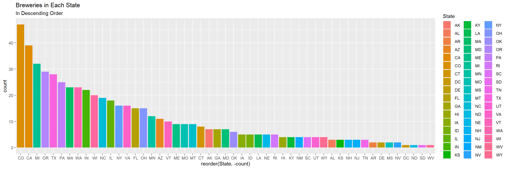
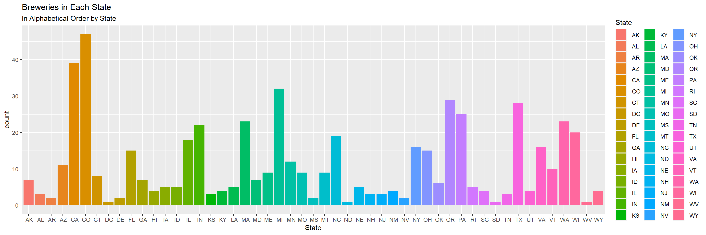
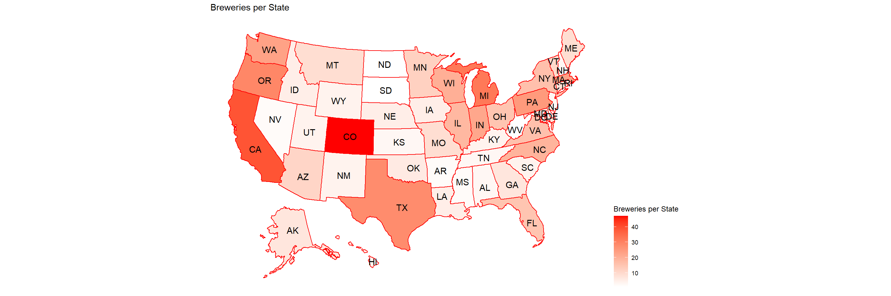
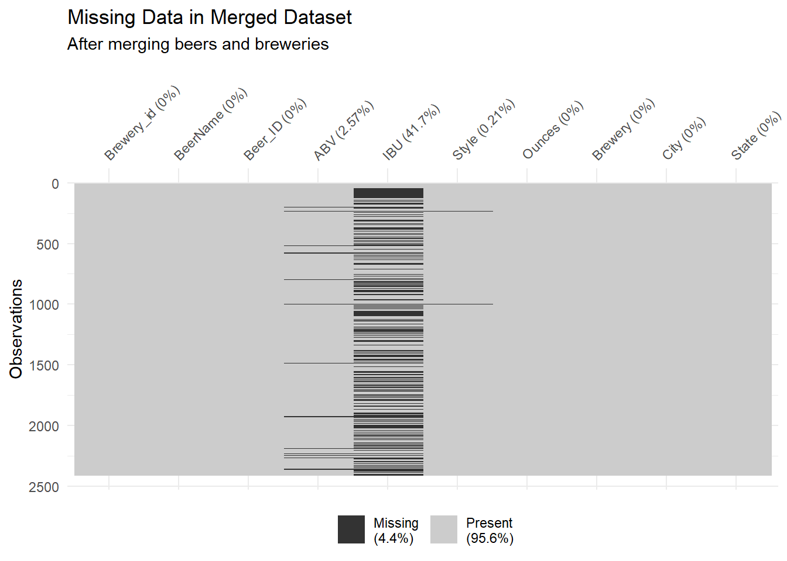
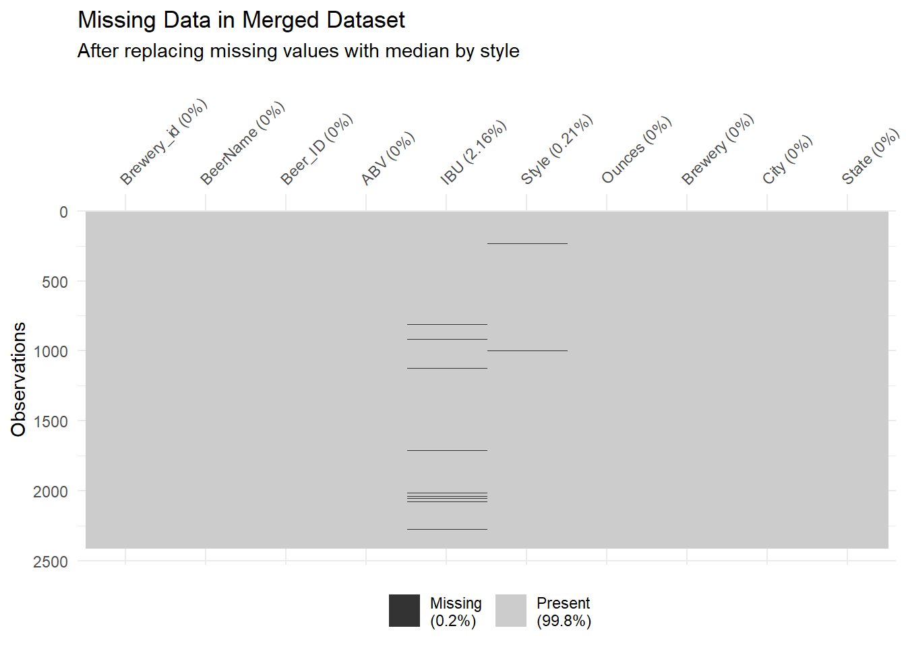
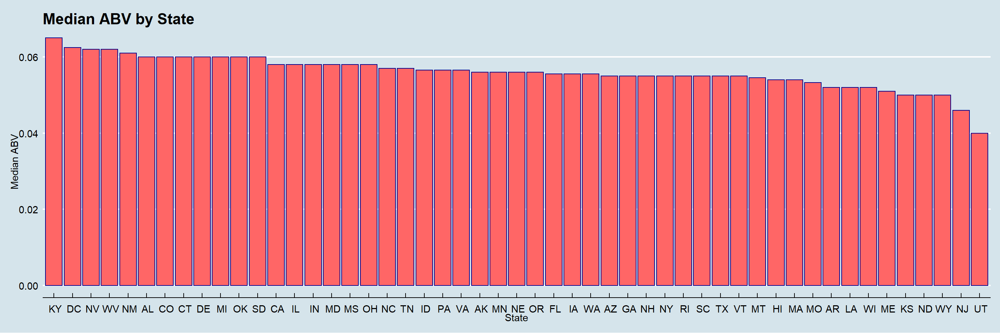

Introduction
In this case study, we will analyze beers and breweries in the US. We worked with two data sets. One dataset contained 2410 different beers, and the other contained 558 breweries in the United States. Later, we will analyze alcohol content and bitterness for these beers, determine if they are related, and if there are trends in certain states.
First, make sure required libraries are installed. Some important ones we used are: e1071 for Naive Bayes, ggplot2 for visualization, usmap to create the us map, caret & class were used for kNN, and visdat to visualize missing values. If an error is given, try installing tinytex using the comment below.
packages <- c("ggplot2", "visdat", "leaps", "ggcorrplot", "leaps", "plotrix", "e1071")
#Tinytex installation, if error arises
#tinytex::install_tinytex()
# Install packages not yet installed
installed_packages <- packages %in% rownames(installed.packages())
if (any(installed_packages == FALSE)) {
install.packages(packages[!installed_packages])
}
library(ggcorrplot)
library(visdat)
library(dplyr)
library(tidyverse)
library(plyr)
library(leaps)
library(zoo)
library(ggplot2)
library(GGally)
library(plotrix)
library(usmap)
library(ggthemes)
library(caret)
library(class)
library(e1071)Read Data
Read data from Beers and Breweries data sets. Make sure to update the file path before running this code.
Beers <- read.csv("Beers.csv", header=T, na.strings=c("","NA"))
Breweries <- read.csv("Breweries.csv", header=T, na.strings=c("","NA"))Question 1: How many breweries are present in each state?
In the following histograms, you can see the number of breweries in each state. Colorado has the most breweries, followed second by California. We also see that West Virginia, Delaware, North Dakota, and South Dakota only have one brewery in their state. Next, you can see a map of the United States that shows the number of breweries per state. The lighter red indicates fewer breweries, and the darker red indicates more breweries. Finally, we created a pie chart to visualize what percentage of the country’s breweries is in the top states. Colorado, California, and Michigan hold the most breweries per state in the US. They account for 21% of the entire nation’s breweries.
#Create a table with number of breweries per state
Breweries.By.State <- Breweries %>% group_by(State) %>% dplyr::summarise(count = n()) %>%
arrange(desc(count))
Breweries.By.State## # A tibble: 51 x 2
## State count
## <chr> <int>
## 1 " CO" 47
## 2 " CA" 39
## 3 " MI" 32
## 4 " OR" 29
## 5 " TX" 28
## 6 " PA" 25
## 7 " MA" 23
## 8 " WA" 23
## 9 " IN" 22
## 10 " WI" 20
## # ... with 41 more rows#Plot in descending order by # of breweries per state
Breweries.By.State %>% ggplot(aes(x = reorder(State, -count) , y = count, fill = State)) + geom_bar(stat = "identity") + ggtitle("Breweries in Each State", "In Descending Order")
#Plot in alphabetical order of States
ggplot(Breweries.By.State, mapping = aes(x = State, y = count, fill = State)) + geom_bar(stat = "identity") + ggtitle("Breweries in Each State", "In Alphabetical Order by State")
#Create the US Map showing distribution of breweries
Breweries.By.State.Graph <- Breweries.By.State
Breweries.By.State.Graph$State <- trimws(Breweries.By.State.Graph$State)
colnames(Breweries.By.State.Graph)[colnames(Breweries.By.State.Graph) == "State"] <- "state"
plot_usmap(data = Breweries.By.State.Graph, values = "count", color = "red", labels=TRUE) +
scale_fill_continuous(
low = "white", high = "red", name = "Breweries per State", label = scales::comma
) + theme(legend.position = "right") +
ggtitle("Breweries per State")
#Pie Chart showing percentage of breweries held by top three states
Breweries.By.State.Graph## # A tibble: 51 x 2
## state count
## <chr> <int>
## 1 CO 47
## 2 CA 39
## 3 MI 32
## 4 OR 29
## 5 TX 28
## 6 PA 25
## 7 MA 23
## 8 WA 23
## 9 IN 22
## 10 WI 20
## # ... with 41 more rowstop.3.States.Breweries <- sum(subset(Breweries.By.State.Graph,
state == "CO" |
state == "CA" |
state == "MI" )$count)
other.Breweries <- sum(Breweries.By.State.Graph$count) - top.3.States.Breweries
slices <- c(top.3.States.Breweries, other.Breweries)
lbls <- c("Top 3 ", "others")
pct <- round(slices/sum(slices)*100)
lbls <- paste(lbls, pct) # add percents to labels
lbls <- paste(lbls,"%",sep="") # ad % to labels
pie(slices, labels = lbls, main="Percentage of Breweries Held by CO, CA, and MI", col=rainbow(length(lbls)))
Question 2: Merge Data
Here, we merged the breweries dataset with the beers dataset and stored this in a new data frame called brewByState. We merged these datasets using brewery ID. Below, you can see the first and last six entries printed.
#Merge Beers and Breweries datasets using Brewery ID
brewByState <- merge(Beers, Breweries, by.x=c("Brewery_id"),
by.y=c("Brew_ID"))
#Rename columns after merge
colnames(brewByState)[2] <- "BeerName"
colnames(brewByState)[8] <- "Brewery"
#Print first six entries in new data frame
brewByState[1:6,]## Brewery_id BeerName Beer_ID ABV IBU Style Ounces Brewery City State
## 1 1 Get Together 2692 0.045 50 American IPA 16 NorthGate Brewing Minneapolis MN
## 2 1 Maggie's Leap 2691 0.049 26 Milk / Sweet Stout 16 NorthGate Brewing Minneapolis MN
## 3 1 Wall's End 2690 0.048 19 English Brown Ale 16 NorthGate Brewing Minneapolis MN
## 4 1 Pumpion 2689 0.060 38 Pumpkin Ale 16 NorthGate Brewing Minneapolis MN
## 5 1 Stronghold 2688 0.060 25 American Porter 16 NorthGate Brewing Minneapolis MN
## 6 1 Parapet ESB 2687 0.056 47 Extra Special / Strong Bitter (ESB) 16 NorthGate Brewing Minneapolis MN#Print the last six entries in new data frame
last = nrow(brewByState)
prev = last - 5
brewByState[prev:last,]## Brewery_id BeerName Beer_ID ABV IBU Style Ounces Brewery City State
## 2405 556 Pilsner Ukiah 98 0.055 NA German Pilsener 12 Ukiah Brewing Company Ukiah CA
## 2406 557 Heinnieweisse Weissebier 52 0.049 NA Hefeweizen 12 Butternuts Beer and Ale Garrattsville NY
## 2407 557 Snapperhead IPA 51 0.068 NA American IPA 12 Butternuts Beer and Ale Garrattsville NY
## 2408 557 Moo Thunder Stout 50 0.049 NA Milk / Sweet Stout 12 Butternuts Beer and Ale Garrattsville NY
## 2409 557 Porkslap Pale Ale 49 0.043 NA American Pale Ale (APA) 12 Butternuts Beer and Ale Garrattsville NY
## 2410 558 Urban Wilderness Pale Ale 30 0.049 NA English Pale Ale 12 Sleeping Lady Brewing Company Anchorage AKQuestion 3: Missing Values
After merging the two data sets, we visualized the missing data. 41.7% of IBU values, 2.57% of ABV values were missing, and .21% of Style values were missing. We elected to replace the missing IBU and ABV values using the median value for each corresponding beer style. After this first replacement, there were no missing ABV values; however, there were a remaining 52 missing IBU values. This is because there were 9 beer styles that had no pre-existing IBU information. In the histogram of this missing information, we can see that most of these beers are ciders. We chose to replace these IBU values with the global median IBU value. We did not replace the missing style values because we did not think it would impact future analysis with the data.
#Visualize missing data
vis_miss(brewByState) + ggtitle("Missing Data in Merged Dataset", "After merging beers and breweries")
# replace NA with Median by Style - if exists
# na.aggregate: Replace NA by Aggregation
brewByState <- as.data.frame(brewByState %>%
group_by(Style) %>%
mutate_at(c("ABV", "IBU"),
na.aggregate, FUN=median))
# after first na treatment we still have 2.57% of missing values for IBU
vis_miss(brewByState) + ggtitle("Missing Data in Merged Dataset", "After replacing missing values with median by style")
#Create data frame to plot the distribution of beer styles with no IBU information
stillMissingIBUs <- brewByState %>% filter(is.na(IBU))
ggplot(stillMissingIBUs, mapping = aes(x = Style, fill = Style)) + geom_bar(stat = "count") + theme(axis.text.x=element_blank(),
axis.ticks.x=element_blank()) + ggtitle("Beer Styles Without Pre-Existing IBU Values")
# the percentage of missing values is rather small -> we will replace it with global median
brewByState$IBU[is.na(brewByState$IBU)]<-median(brewByState$IBU,na.rm=TRUE)
vis_miss(brewByState) + ggtitle("Missing Data in Merged Dataset", "After replacing remaining values with global median") #Question 4: Compute the median alcohol content and IBU for each state After calculating the median ABV for each state, the range of these values is 4.0% - 6.5% and the mean is 5.0%. The range of the median IBUs is 17.75 – 60.5 and the mean is 33.11. Delaware & West Virginia are outliers and only have two beers from each state.
#Question 4: Compute the median alcohol content and IBU for each state After calculating the median ABV for each state, the range of these values is 4.0% - 6.5% and the mean is 5.0%. The range of the median IBUs is 17.75 – 60.5 and the mean is 33.11. Delaware & West Virginia are outliers and only have two beers from each state.
#Show summary statistics for median ABV and IBU
brewByState.Stats <- brewByState %>% group_by(State) %>%
dplyr::summarise(medianABV = median(ABV), medianIBU = median(IBU), maxABV = max(ABV), maxIBU = max(IBU))
brewByState.Stats## # A tibble: 51 x 5
## State medianABV medianIBU maxABV maxIBU
## <chr> <dbl> <dbl> <dbl> <dbl>
## 1 " AK" 0.056 31 0.068 71
## 2 " AL" 0.06 39.5 0.093 103
## 3 " AR" 0.052 31 0.061 41
## 4 " AZ" 0.055 21.5 0.095 99
## 5 " CA" 0.058 40 0.099 115
## 6 " CO" 0.06 35 0.128 104
## 7 " CT" 0.06 31 0.09 91
## 8 " DC" 0.0625 27 0.092 115
## 9 " DE" 0.06 60.5 0.065 69
## 10 " FL" 0.0555 35.8 0.082 82
## # ... with 41 more rows#Print graph of Median ABV by State
brewByState.Stats %>% ggplot(aes(x = reorder(State, -medianABV) , y = medianABV)) +
geom_bar(stat = "identity", color = "darkblue", fill = "#FF6666")+
ggtitle("Median ABV by State") +
xlab("State") + ylab("Median ABV") +
theme_economist()
#Print graph of Median IBU by State
brewByState.Stats %>% ggplot(aes(x = reorder(State, -medianIBU) , y = medianIBU)) +
geom_bar(stat = "identity" , color = "darkblue", fill = "#FF6666")+
ggtitle("Median IBU by State") +
xlab("State") + ylab("Median IBU") +
theme_economist()
#Print graph showing relationship between Median IBU and Median ABV
brewByState.Stats %>%
ggplot(aes(x = medianIBU , y = medianABV)) + geom_point() +
geom_smooth(method=lm, linetype="dashed",
color="darkred", fill="red") +
ggtitle("Median ABV VS median IBU by State")+
theme_economist()## `geom_smooth()` using formula 'y ~ x'
#Calculate pearson correlation for median IBU and ABV
pearson.cor <- round(cor(brewByState.Stats$medianIBU, brewByState.Stats$medianABV),2)
pearson.cor## [1] 0.29#Show beers in Delaware in West Virginia.. Only two beers in each state.
brewByState %>% filter(State == " DE")## Brewery_id BeerName Beer_ID ABV IBU Style Ounces Brewery City State
## 1 317 Appreciation Ale 1784 0.065 69 American IPA 16 Iron Hill Brewery & Restaurant Wilmington DE
## 2 540 Greenville Pale Ale 433 0.055 52 American Pale Ale (APA) 12 Twin Lakes Brewing Company Greenville DEbrewByState %>% filter(State == " WV")## Brewery_id BeerName Beer_ID ABV IBU Style Ounces Brewery City State
## 1 157 Wild Trail Pale Ale 2314 0.057 44 American Pale Ale (APA) 12 Greenbrier Valley Brewing Company Lewisburg WV
## 2 157 Mothman Black IPA 2313 0.067 71 American Black Ale 12 Greenbrier Valley Brewing Company Lewisburg WVQuestion 5: MAX ABV, IBU by state
The state with the highest ABV value was Colorado, with an ABV of 12.8%. The state with the highest IBU was Oregon, with an IBU of 138.
#Print the state with the maximum ABV value
brewByState[which.max(brewByState$ABV),]## Brewery_id BeerName Beer_ID ABV IBU Style Ounces Brewery City State
## 375 52 Lee Hill Series Vol. 5 - Belgian Style Quadrupel Ale 2565 0.128 24 Quadrupel (Quad) 19.2 Upslope Brewing Company Boulder CO#Print the state with maximum IBU value
brewByState[which.max(brewByState$IBU),]## Brewery_id BeerName Beer_ID ABV IBU Style Ounces Brewery City State
## 1857 375 Bitter Bitch Imperial IPA 980 0.082 138 American Double / Imperial IPA 12 Astoria Brewing Company Astoria ORQuestion 6: Summary statistics ABV
The Summary Statistics of Percent ABV are: Min: 1.0% Q1: 5.0% Median: 5.6% Mean: 5.972% Q3: 6.7% Max: 12.8%
The mean is larger than the median and this is a right-skewed distribution.
#Print summary of ABV statistics by state.
summary(brewByState$ABV)## Min. 1st Qu. Median Mean 3rd Qu. Max.
## 0.00100 0.05000 0.05600 0.05972 0.06700 0.12800#Print histogram of ABV values
brewByState %>% ggplot(aes(ABV)) +
geom_histogram( color = "darkblue", fill = "#FF6666") +
ggtitle("Distribution of ABV") +
xlab("ABV") + ylab("Count") +
theme_economist()## `stat_bin()` using `bins = 30`. Pick better value with `binwidth`.
#Print box plot of ABV values by State
ggplot(data=brewByState, aes(y=ABV,x=State)) +
geom_boxplot(color = "darkblue", fill = "#FF6666") +
ggtitle("Distribution of ABV by state") +
xlab("State") + ylab("ABV") +
theme_economist()
#Question 7: Correlation
After looking at the scatter plot below, we see there is a positive correlation between ABV and IBU, with a pearson correlation of .59.
#Calculate pearson correlation for ABV and IBU
pearson.cor <- round(cor(brewByState$ABV, brewByState$IBU),2)
pearson.cor## [1] 0.59#Print scatter plot of ABV vs IBU with pearson correlation value
brewByState %>%
ggplot(aes(x = ABV , y = IBU)) + geom_point() +
geom_smooth(method=lm, linetype="dashed",
color="darkred", fill="red") +
annotate(x=0.02, y=95,
label= paste("Pearson Correlation = ", pearson.cor),
geom="text", size=6, color = "red")+
ggtitle("Relationship between ABV and IBU")+
theme_economist()## `geom_smooth()` using formula 'y ~ x'
#Question 8: KNN
Used kNN and Naive Bayes to create classification models. The kNN model had better accuracy than the Naive Bayes. We also used a beer from outside this data set to test the model.
#Use NLP to extract data for IPA and Ales
brewByState$BeerClass = case_when(grepl("\\bIPA\\b", brewByState$Style, ignore.case = TRUE) ~ "IPA",
grepl("\\bALE\\b", brewByState$Style, ignore.case = TRUE ) ~ "ALE",
TRUE ~ "none")
# Remove irrelevant beer types to improve performance
brewByState <- brewByState %>% filter(BeerClass != "none")
#kNN Classification
set.seed(150)
iterations = 100
numks = 40
masterAcc = matrix(nrow = iterations, ncol = numks)
splitPerc = .7
for(j in 1:iterations)
{
trainIndices = sample(1:dim(brewByState)[1],round(splitPerc * dim(brewByState)[1]))
train = brewByState[trainIndices,]
test = brewByState[-trainIndices,]
for(i in 1:numks)
{
classifications = knn(train[,c(4,5)],test[,c(4,5)],train$BeerClass, prob = TRUE, k = i)
table(classifications,test$BeerClass)
CM = confusionMatrix(table(classifications,test$BeerClass))
masterAcc[j,i] = CM$overall[1]
}
}
MeanAcc = colMeans(masterAcc)
#Graph of k Value vs. Accuracy
plot(seq(1,numks,1),MeanAcc, type = "l", main = "Values of k vs. Accuracy", xlab = "Value of k")
max(MeanAcc)## [1] 0.9049565which(MeanAcc==max(MeanAcc)) ## [1] 5#Found best k = 5. Building complete model to find confusion matrix for best k.
sample_size <- floor(0.70 * nrow(brewByState))
train_index <- sample(seq_len(nrow(brewByState)), size = sample_size)
train <- brewByState[train_index, ]
test <- brewByState[-train_index, ]
knn.model <- knn(train = train[,4:5], test = test[,4:5], cl = train$BeerClass, k=5)
table(test$BeerClass,knn.model)## knn.model
## ALE IPA
## ALE 256 24
## IPA 36 145#Print confusion matrix for k=5
CM = confusionMatrix(table(test$BeerClass,knn.model))
CM$overall[1]## Accuracy
## 0.8698482CM## Confusion Matrix and Statistics
##
## knn.model
## ALE IPA
## ALE 256 24
## IPA 36 145
##
## Accuracy : 0.8698
## 95% CI : (0.8357, 0.8992)
## No Information Rate : 0.6334
## P-Value [Acc > NIR] : <2e-16
##
## Kappa : 0.7239
##
## Mcnemar's Test P-Value : 0.1556
##
## Sensitivity : 0.8767
## Specificity : 0.8580
## Pos Pred Value : 0.9143
## Neg Pred Value : 0.8011
## Prevalence : 0.6334
## Detection Rate : 0.5553
## Detection Prevalence : 0.6074
## Balanced Accuracy : 0.8674
##
## 'Positive' Class : ALE
## #Classification examples
#Examples used (not in our dataset!): 512 IPA: 65 IBU and 6.6% ABV & Fireant Funeral Amber Ale: 32 IBU and 6% ABV
examples.classify <- data.frame(ABV = c(0.072, 0.06),
IBU = c(65, 32))
class.examples = knn(train[,4:5],examples.classify,train$BeerClass, prob = TRUE, k = 5)
class.examples## [1] IPA ALE
## attr(,"prob")
## [1] 1 1
## Levels: ALE IPA#Building Naive Bayes model using 100 iterations to see if it is a better classification model than kNN.
set.seed(150)
iterations = 100
masterAcc = matrix(nrow = iterations)
masterSensitivity = matrix(nrow = iterations)
masterSpecificity = matrix(nrow = iterations)
splitPerc = .7
for(i in 1:iterations)
{
trainIndices = sample(1:dim(brewByState)[1],round(splitPerc * dim(brewByState)[1]))
train = brewByState[trainIndices,]
test = brewByState[-trainIndices,]
model.nb.train <- naiveBayes(BeerClass ~ ABV + IBU, data = brewByState)
predictions.nb <- predict(model.nb.train, data.frame(ABV = test$ABV,
IBU = test$IBU) )
CM = confusionMatrix(table(predictions.nb, test$BeerClass))
masterAcc[i] = CM$overall[1]
masterSensitivity[i] = CM$byClass[1]
masterSpecificity[i] = CM$byClass[2]
}
MeanAcc = colMeans(masterAcc)
MeanSensitivity = colMeans(masterSensitivity)
MeanSpecificity = colMeans(masterSpecificity)
#Print accuracy, sensitivity, and specificity for the Naive Bayes model
MeanAcc## [1] 0.8748478MeanSensitivity## [1] 0.8939974MeanSpecificity## [1] 0.8426999#Question 9: Useful Inference
As shown earlier, West Virginia and Delaware only have two beers in each state. There could be a good opportunity to sell beer here! We analyzed the most popular beers in states neighboring WV and DE. Based upon the statistics for the neighboring states, in Delaware, we think an American IPA with an IBU of 50-60 and an ABV of ~7%, an Imperial IPA with 80-90 IBU and ~8% ABV, or a Belgian Pale Ale with an IBU of ~20 and an ABV fo 7% would be successful here. In West Virginia, based upon the statistics in neighboring states, we think an American IPA of ~70 IBU and ABV of 6-7% or an APA with 45 IBU and an ABV 5-6% would be successful here.
#Beers in DE: IPA and APA
brewByState %>% filter(State == " DE")## Brewery_id BeerName Beer_ID ABV IBU Style Ounces Brewery City State BeerClass
## 1 317 Appreciation Ale 1784 0.065 69 American IPA 16 Iron Hill Brewery & Restaurant Wilmington DE IPA
## 2 540 Greenville Pale Ale 433 0.055 52 American Pale Ale (APA) 12 Twin Lakes Brewing Company Greenville DE ALE#Beers in WV: Black Ale and APA
brewByState %>% filter(State == " WV")## Brewery_id BeerName Beer_ID ABV IBU Style Ounces Brewery City State BeerClass
## 1 157 Wild Trail Pale Ale 2314 0.057 44 American Pale Ale (APA) 12 Greenbrier Valley Brewing Company Lewisburg WV ALE
## 2 157 Mothman Black IPA 2313 0.067 71 American Black Ale 12 Greenbrier Valley Brewing Company Lewisburg WV ALE#Create new data frame to hold the beers in states neighboring Delaware. Did not include Pennsylvania because it skewed this data.
beersDE <- brewByState %>% filter(State == " NJ" | State == " MD")
#Print histogram for styles of beer in Delaware's neighbor states.
beersDE %>% ggplot(aes(x = Style, fill = Style)) + geom_bar(stat = "count") + theme(axis.text.x=element_blank(),
axis.ticks.x=element_blank()) + ggtitle("Histogram of Beer Styles in DE's Neighboring States")-1.png)
#Top 4 beers near DE: IPAs, American Black Ale, American Double / Imperial IPA, and Belgian Pale Ale
top4DE <- beersDE %>% filter(Style =="American Double / Imperial IPA" | Style == "American IPA"|Style == "American Black Ale"|Style == "Belgian Pale Ale")
#Print histogram of the most popular beer styles near Delaware.
top4DE %>% ggplot(aes(x = Style, fill = Style)) + geom_bar(stat = "count") + theme(axis.text.x=element_blank(),
axis.ticks.x=element_blank()) + ggtitle("Histogram of Top Beer Styles in DE's Neighboring States")-2.png)
#Print scatter plot of ABV vs IBU by beer style near Delaware
#Recommendation: American IPA w/ ~50-60 IBU and ABV of 7%, Imperial IPA with 80-90 IBU and 8% ABV, Belgian w/ IBU of ~20 and and ABV of 7%..
top4DE %>% ggplot(aes(x = ABV, y = IBU, color = Style)) + geom_point() + ggtitle("ABVs and IBUs of Top 4 beers in Delaware's Neighboring States")-3.png)
#Create new data frame to hold the beers in neighboring States for West Virginia
beersWV <- brewByState %>% filter(State == " VA" | State == " PA" | State == " OH" | State == " KY")
#Print histogram of the beer styles near West Virginia
beersWV %>% ggplot(aes(x = Style, fill = Style)) + geom_bar(stat = "count") + theme(axis.text.x=element_blank(),
axis.ticks.x=element_blank()) + ggtitle("Histogram of Beer Styles in WV's Neighboring States")-4.png)
#Top 3 beers near West Virginia: IPAs, APAs, and American Amber / Red Ale
top3WV <- beersWV %>% filter(Style =="American Amber / Red Ale" | Style == "American IPA" | Style == "American Pale Ale (APA)")
#Print the histogram of the top 3 beer styles
top3WV %>% ggplot(aes(x = Style, fill = Style)) + geom_bar(stat = "count") + theme(axis.text.x=element_blank(),
axis.ticks.x=element_blank()) + ggtitle("Histogram of Top Beer Styles in WV's Neighboring States")-5.png)
#Print scatter plot of ABV vs IBU by Style for West Virginia
#Recommendation: American IPA of ~70 IBU and ABV of 6-7%, APA of 45 IBU and 5-6% ABV. Red Ale is inconclusive
top3WV %>% ggplot(aes(x = ABV, y = IBU, color = Style)) + geom_point() + ggtitle("ABVs and IBUs of Top 3 beers in WV's Neighboring States")-6.png)
Conclusion: Breweries By State The state with the most breweries was Colorado, with 47 breweries. DC, North Dakota, South Dakota, and West Virginia only have one brewery. The top 3 states with breweries are: Colorado, California, and Michigan. These three states hold 21% of the nation’s breweries.
Missing Data After merging the two data sets, we saw 41.7% of IBU values, 2.57% of ABV values, and .21% of Style values were missing. We replaced the missing IBU and ABV values using the median for each beer style. We did not replace missing style values. After this initial replacent by style, there were still 2.16% IBU values missing. We replaced these values with the global median IBU.
Median ABV by State Range: 4.0%-6.0% Mean: 5.0%
Median IBU by State Range: 17.75 – 60.5 Mean: 33.11 There are only two beers from Delaware & West Virginia. These two states are outliers.
Comparison of State Median IBU and ABV There is a positive correlation between median ABV and IBU. Pearson correlation = .28
Maximum ABV Value The state with the highest ABV value is Colorado, with an ABV of 12.8%.
Maximum IBU Value The state with the highest IBU value is Oregon, with an IBU of 138.
Distribution of ABV The ABV distribution is right-skewed.
Relationship between IBU and ABV There is a positive correlation between ABV and IBU. Pearson correlation = .59.
kNN Classification: A kNN classification model with k = 5 gave the highest accuracy (Accuracy = .905). This model had a specificity of .8767 and a sensitivity of .8580. We also used test data from outside of the dataset. The model classified each beer correctly with 100% probability.
Useful inferences: Based upon the most popular beers in Delaware’s neighbor states, we recommend the following new products: American IPA with 50-60 IBU and 7% ABV Imperial IPA with 80-90 IBU and 8% ABV Belgian Pale Ale with 20 IBU and 7% ABV
Based upon the most popular beers in West Virginia’s neighbor states, we recommend the following new products: American IPA with 70 IBU and ABV of 6-7% American Pale Ale (APA) with 45 IBU and 5-6% ABV